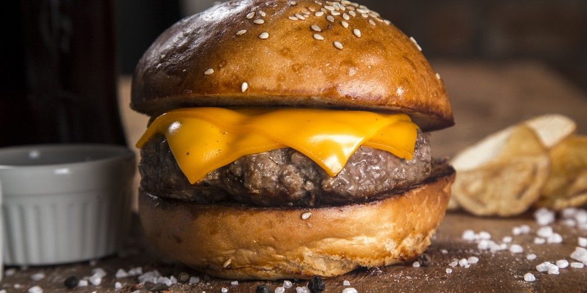

HAMBURGUESA

Una hamburguesa de carne molida con queso derretido.
La hamburguesa de queso es simple y satisfactoria. Una jugosa hamburguesa de carne molida coronada con queso derretido.
El queso se filtra hacia abajo, impregnando la carne con su cremosidad. Los ingredientes sencillos se fusionan en una mordida de pura comodidad. Pocas cosas son tan placenteras como las capas de carne y queso fundidas en un bocado perfecto.
ingredientes
- Carne molida de res o de tu preferencia
- Pan para hamburguesas
- Queso cheddar u otro a elección
- Lechuga
- Tomate
- Cebolla
- Pepinillos (Opcional)
- Aceite vegetal
- Sal y pimienta al gusto
Como hacerla:
- Forma las hamburguesas. Toma la carne molida y forma 4 hamburguesas gruesas y redondas de igual tamaño. Presiónalas ligeramente para que se compacten.
- Enciende el fuego y calienta un poco de aceite en una sartén a fuego medio-alto.
- Sazona las hamburguesas con sal y pimienta por ambos lados. Coloca las hamburguesas en la sartén caliente.
- Cocina por 3-5 minutos hasta que las hamburguesas estén doradas. Dale vuelta con cuidado y cocina el otro lado otros 3-5 minutos.
- Cubre cada hamburguesa con una rebanada de queso. Tapa la sartén y deja cocinar 1 minuto hasta que el queso se derrita.
- Sirve las hamburguesas de queso sobre los panes. Decóralas con lechuga, tomate, cebolla, pepinillos y salsas de tu preferencia.
- Acompaña las hamburguesas de queso con tus guarniciones favoritas como papas fritas, bastones de zanahoria o ensalada.
- Disfruta tu hamburguesa de queso recién hecha. ¡Buen provecho!
- Opcional: para una doble hamburguesa de queso, coloca dos hamburguesas cocinadas con una rebanada de queso en medio. Cubre todo con más queso derretido. ¡A disfrutar!